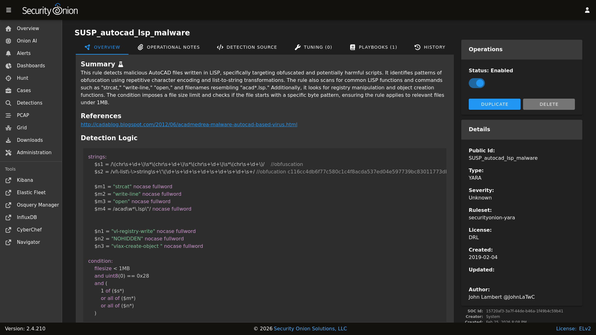

YARA
YARA rules are loaded into Strelka to monitor files for suspicious or noteworthy characteristics. Active YARA rules generate alerts that can be found in Alerts.
From https://virustotal.github.io/yara/:
YARA is a tool aimed at (but not limited to) helping malware researchers to identify and classify malware samples. With YARA you can create descriptions of malware families (or whatever you want to describe) based on textual or binary patterns. Each description, a.k.a rule, consists of a set of strings and a boolean expression which determine its logic.
Managing Existing YARA Rules
You can manage existing YARA rules via Detections. There are two ways to do so:
From the main Detections interface, you can search for the desired detection and click the binoculars icon.
From the Alerts interface, you can click an alert and then click the
Tune Detectionmenu item.
Once you’ve used one of these methods to reach the detection detail page, you can check the Status field in the upper-right corner and use the slider to enable or disable the detection.
{kind=link}

Adding New YARA Rules
To add a new YARA rule, go to the main Detections page and click the blue + button between Options and the query bar. A form will appear where you will:
click the Language drop-down and select
YARAoptionally specify a license
add the signature
click the
CREATEbutton and the detection should deploy to your grid at the next 15-minute cycle

YARA Rules Options
You can configure YARA rules options as follows:
Navigate to Administration –> Configuration.
At the top of the page, click the
Optionsmenu and then enable theShow advanced settingsoption.Navigate to soc –> config –> server –> modules –> strelkaengine.
Once you’ve reached this location, here are some common settings.
YARA Update Frequency
By default, Security Onion checks for new YARA rules every 24 hours. You can change this via the strelkaengine –> communityRulesImportFrequencySeconds setting.
Custom YARA Repositories
You can configure Security Onion to pull YARA rules from custom git repos via strelkaengine –> rulesRepos –> default.
Repos can be accessed via https or from the local filesystem. For example:
file:///nsm/rules/detect-yara/repos/my-custom-rep